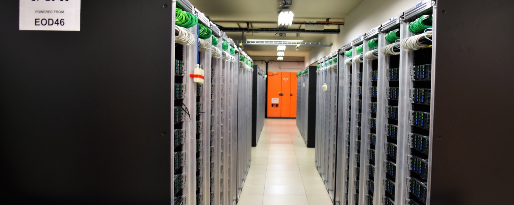

"The number of transistors on a chip will double every two years."
Gordon Moore, writing in Electronics magazine three years before he co-founded Intel, working from five data points. He called it a guess. It has held for sixty years, and it is the floor the rest of this story stands on.
Scroll ↓July 1969
The Saturn V that carried Apollo 11 was steered by an IBM computer in the rocket's instrument ring. My uncle, Wen Tsing Chow, was the scientific advisor on its design. He had already invented programmable read-only memory and built the first solid-state computer to fly in space, for the Atlas missile. I grew up hearing about this, and it still amazes me.
The guidance computer inside the spacecraft itself ran on integrated circuits carrying six transistors each. That is the dot on the left.
Portrait: U.S. Air Force, Space and Missile Pioneers, 2004.1971 to 2019
Two years after the Moon landing, Intel shipped the 4004 with 2,300 transistors on one chip. Then Moore's guess simply kept coming true: every named chip here is a real record, and the line through them doubles about every two years for five decades.
Zoom out
Pull the frame back to today and the same line goes vertical. Everything in the dashed box is the chart you were just looking at. The record chip now carries hundreds of billions of transistors; the Apollo chip's six would not register as a pixel.

The turn
Here is the thing I most wanted to see. AI is not riding Moore's curve; it is building new exponentials on top of it. To compare them fairly, every line from here on is divided by its own 2012 level, the year AlexNet made GPUs the engine of AI, so the slopes can be read against each other. On this axis a straight line is a steady doubling, and steeper is faster.
Training compute
The compute used to train the largest AI models has doubled every since 2012. Moore's Law manages a doubling every . That is roughly AI doublings for every one the chips deliver; the rest is money and scale, more accelerators running for longer.
All four
Add the two layers in between, how fast a single accelerator chip has become and how large the models have grown, and the picture is complete. Moore's Law, the exponential everyone knows, is the slowest line on the chart.
Explore it
Below, the same data with every control: switch layers, go linear or log, brush any period for its doubling time, and click any point for its source.